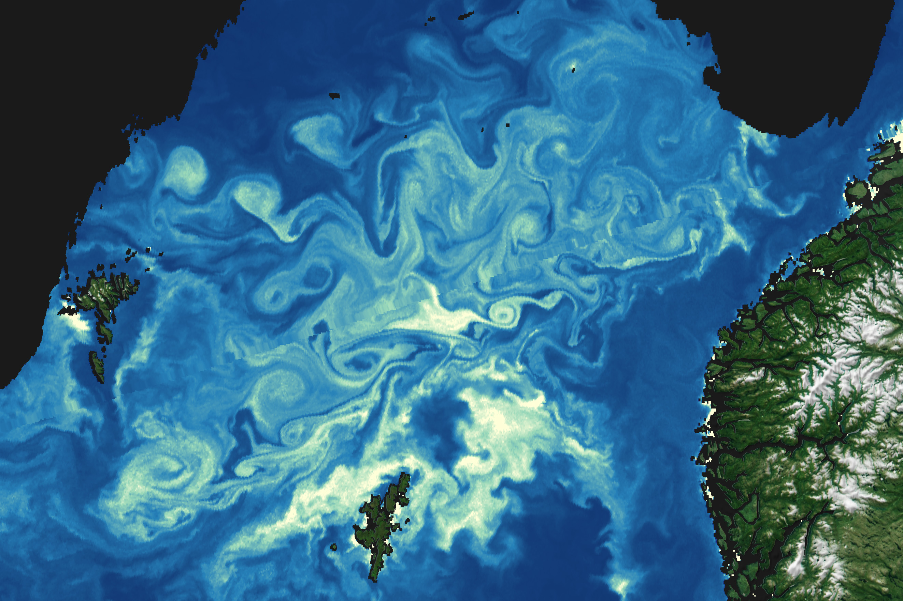

A Sea Aswirl With Chlorophyll
NASA’s PACE (Plankton, Aerosol, Cloud, ocean Ecosystem) mission launched in February 2024 to study Earth’s oceans and atmosphere and the impact of the tiny things therein. For over a year, the satellite’s hyperspectral OCI (Ocean Color Instrument) has been measuring the planet’s waterbodies across a broad spectrum of light to learn more about aquatic ecology, including its microscopic life forms.
Among its many capabilities and advancements, PACE’s OCI extends a decades-long record of chlorophyll-a measurements in ocean surface waters. Researchers use chlorophyll concentrations as a proxy for phytoplankton biomass and a gauge of ecosystem function. Phytoplankton, which harvest sunlight to carry out photosynthesis, form the base of the marine food web and feed nearly all life in the ocean. They also produce up to half of the oxygen on Earth and serve as part of the ocean’s “biological carbon pump,” which transfers carbon dioxide from the atmosphere to the deep ocean.
These images of the southern Norwegian Sea were created using observations made by PACE’s OCI on July 12, 2025. The left image shows the area in natural color, resembling what the human eye would see. Phytoplankton are so plentiful that they color surface waters green and milky blue, swirling with winds and currents. The right image shows concentrations of chlorophyll-a, the pigment abundant in phytoplankton. The values are based on the ratio of green and blue light reflected back to the sensor.
The swirling eddies depicted in the chlorophyll data, beyond their sheer beauty, suggest a complexity in the marine environment, said Ivona Cetinić, an oceanographer at Morgan State University and member of NASA’s Ocean Ecology Laboratory. “Each of these eddies may have slightly different ecosystems,” she said. Currents can create obstacles, like mountains on land, that phytoplankton cannot cross, she explained. Once entrained within an eddy, the organisms may become food for different mixes of species.
The milky turquoise-blue areas visible in natural color have the hallmark of coccolithophores, a type of phytoplankton plated with white, reflective calcium carbonate. The greener areas may contain a mix of other types, including diatoms. PACE, with its many spectral bands and the ability to “see all the different greens,” has the potential to distinguish these different types.
“Chlorophyll says, ‘We’re all here,’” Cetinić said. “OCI can say who’s here.” An algorithm called MOANA, for example, can identify three phytoplankton groups and is already helping researchers understand the intricacies of phytoplankton communities. More algorithms are in development.
Still, Cetinić and colleagues do not take for granted the long-term, global record of chlorophyll and its value as the standard variable in ocean color. “Only satellites can provide this synoptic view of phytoplankton, and it has revolutionized our understanding of the ocean ecosystems that we all rely on for fisheries, coastal recreation, and even the oxygen we breathe,” said PACE Mission Applications Lead Morgaine McKibben.
Modern oceanography before the satellite age could best be described as “a century of undersampling,” renowned ocean scientist Walter Munk once said. Now, well into the satellite era, NASA has maintained continuous, remotely sensed ocean color measurements for the globe dating back to 1997 and the launch of SeaWiFS (Sea-viewing Wide Field-of-View Sensor). With OCI’s clearer signal than previous satellite instruments and better coverage with no sunglint, PACE is extending and improving upon this critical data record.